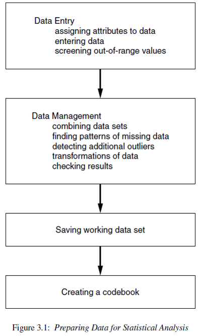

Preparing Data for Analysis
Workflow and Data Cleaning
Once the data are available from a study there are still a number of steps that must be undertaken to get them into shape for analysis.
One of the most misunderstood parts of the analysis process is the data preparation stage. To say that 70% of any analysis is spent on the data management stage is not an understatement.
This chapter provides information on topics related to data processing and corresponds to PMA6 Chapter 3.
Reproducible workflows
Reproducibility is the ability for any researcher to take the same data set and run the same set of software program instructions as another researcher and achieve the same results.
The goal is to create an exact record of what was done to a data set to produce a specific result. To achieve reproducibility, we believe that three things must be present:
- The un-processed data are connected directly to software code file(s) that perform data preparation techniques.
- The processed data are connected directly to other software code file(s) that perform the analyses.
- All data and code files are self-contained such that they could be given to another researcher to execute the code commands on a separate computer and achieve the same results as the original author.

 Why do we need a codebook?
Why do we need a codebook?
- You are your own collaborator 6 months from now. Make sure you will be able to understand what you were doing.
- Investing the time to do things clearly and in a reproducible manner will make your future self happy.
- Comment your code with explanations and instructions.
- How did you get from point A to B?
- Why did you recode this variable in this manner?
- We need to record those steps (not just for posterity).
- This means your code must be saved in a script file.
- Include sufficient notes to yourself describing what you are doing and why.
- For R, this can be in a
.R,.Rmdor.qmdfile. I always prefer the latter. - For SPSS you can specify to
paste the syntaxand copy into a.spsscript file. - For SAS you’ll use a
.sasfile - For STATA this will be a
.dofile

Figure Credits: Roger Peng
Literate programming
- Programming paradigm introduced by Knuth (1984)
- Explain the logic of the program or analysis process in a natural language,
- Small code snippets included at each step act as a full set of instructions that can be executed to reproduce the result/analysis being discussed.
Literate programming tools are integrated into most common statistical packages
- Markdown (R, Stata), Quarto (R, Python, others)
- \(\LaTeX\) (R, SAS, Stata)
Practicing reproducible research techniques using literate programming tools allows such major updates to be a simple matter of re-compiling all coded instructions using the updated data set.
The effort then is reduced to a careful review and update of any written results.
Using literate programming tools create formatted documents
- section headers
- bold and italicized words
- tables and graphics with built-in captions
in a streamlined manner that is fully synchronized with the code itself.
The author writes the text explanations, interpretations, and code in the statistical software program itself, and the program will execute all commands and combine the text, code and output all together into a final dynamic document.
What stages of the pipeline shown above can we conduct using literate programming tools?
Import data
This section uses the raw depression data set from the Afifi et.al. textbook. This is a tab-delimited data set, so we opt to use read.table here. We include arguments sep="\t" to indicate columns are separated with tabs and header=TRUE to indicate the first row of the data is the variable names.
library(ggplot2)
depress_raw <- read.table("https://norcalbiostat.netlify.com/data/Depress.txt",
sep="\t", header=TRUE) The absolute first thing you should do is to look at your raw data table. Are the column headers variable names? Did all the rows get read in? Are there any extra columns or rows included?
Data Management
Questions to ask yourself while reviewing the codebook to choose variables to be used in an analysis.
- Are there codes that indicate missing? E.g. MISSING or -99?
- Do you need to make response codes more logical?
- Some systems will record 1=YES and 2=NO. This should be changed to 0=NO.
- Do you need to recode numerical variables to categorical?
- Sometimes categorical data will be recorded as 1, 2, 3 etc when those numbers represent named categories.
- Do you need to create secondary variables such as an average across measures to create a score.
- Are the variable names user friendly? Mixtures of CAPS and lower case, names with spaces or special characters should all be changed.
Some of these answers will come only after you look at your data. This can be looking at the raw data itself but also looking at tables and charts generated from the data. Often when you try to create a plot or table you will encounter an error or something odd looking that will be the notification that something has to be adjusted.
The next sections go over a few of the common data management processes, but is not comprehensive, and may only show one method for cleaning. There are always different ways to accomplish tasks.
Renaming variable names for sanity sake
The best method is to use the clean_names() function from the janitor package.
depress <- depress_raw %>% janitor::clean_names()A base R soluion is to use `tolower() to turn all variable names to lower case.
## names(depress) <- tolower(names(depress))
tolower("ThIs MIXTure of CAPS and lowercase WILL alL be conVERteD to LoWeR CAsE")
## [1] "this mixture of caps and lowercase will all be converted to lower case"Identifying Variable Types
The str function is short for structure. This shows you the variable names, what data types R thinks each variable are, and some of the raw data.
str(depress)
## 'data.frame': 294 obs. of 37 variables:
## $ id : int 1 2 3 4 5 6 7 8 9 10 ...
## $ sex : int 2 1 2 2 2 1 2 1 2 1 ...
## $ age : int 68 58 45 50 33 24 58 22 47 30 ...
## $ marital : int 5 3 2 3 4 2 2 1 2 2 ...
## $ educat : int 2 4 3 3 3 3 2 3 3 2 ...
## $ employ : int 4 1 1 3 1 1 5 1 4 1 ...
## $ income : int 4 15 28 9 35 11 11 9 23 35 ...
## $ relig : int 1 1 1 1 1 1 1 1 2 4 ...
## $ c1 : int 0 0 0 0 0 0 2 0 0 0 ...
## $ c2 : int 0 0 0 0 0 0 1 1 1 0 ...
## $ c3 : int 0 1 0 0 0 0 1 2 1 0 ...
## $ c4 : int 0 0 0 0 0 0 2 0 0 0 ...
## $ c5 : int 0 0 1 1 0 0 1 2 0 0 ...
## $ c6 : int 0 0 0 1 0 0 0 1 3 0 ...
## $ c7 : int 0 0 0 0 0 0 0 0 0 0 ...
## $ c8 : int 0 0 0 3 3 0 2 0 0 0 ...
## $ c9 : int 0 0 0 0 3 1 2 0 0 0 ...
## $ c10 : int 0 0 0 0 0 0 0 0 0 0 ...
## $ c11 : int 0 0 0 0 0 0 0 0 0 0 ...
## $ c12 : int 0 1 0 0 0 1 0 0 3 0 ...
## $ c13 : int 0 0 0 0 0 2 0 0 0 0 ...
## $ c14 : int 0 0 1 0 0 0 0 0 3 0 ...
## $ c15 : int 0 1 1 0 0 0 3 0 2 0 ...
## $ c16 : int 0 0 1 0 0 2 0 1 3 0 ...
## $ c17 : int 0 1 0 0 0 1 0 1 0 0 ...
## $ c18 : int 0 0 0 0 0 0 0 1 0 0 ...
## $ c19 : int 0 0 0 0 0 0 0 1 0 0 ...
## $ c20 : int 0 0 0 0 0 0 1 0 0 0 ...
## $ cesd : int 0 4 4 5 6 7 15 10 16 0 ...
## $ cases : int 0 0 0 0 0 0 0 0 1 0 ...
## $ drink : int 2 1 1 2 1 1 2 2 1 1 ...
## $ health : int 2 1 2 1 1 1 3 1 4 1 ...
## $ regdoc : int 1 1 1 1 1 1 1 2 1 1 ...
## $ treat : int 1 1 1 2 1 1 1 2 1 2 ...
## $ beddays : int 0 0 0 0 1 0 0 0 1 0 ...
## $ acuteill: int 0 0 0 0 1 1 1 1 0 0 ...
## $ chronill: int 1 1 0 1 0 1 1 0 1 0 ...A tidyverse alternative is glimpse()
glimpse(depress)
## Rows: 294
## Columns: 37
## $ id <int> 1, 2, 3, 4, 5, 6, 7, 8, 9, 10, 11, 12, 13, 14, 15, 16, 17, 18…
## $ sex <int> 2, 1, 2, 2, 2, 1, 2, 1, 2, 1, 2, 2, 1, 2, 2, 2, 2, 2, 2, 1, 2…
## $ age <int> 68, 58, 45, 50, 33, 24, 58, 22, 47, 30, 20, 57, 39, 61, 23, 2…
## $ marital <int> 5, 3, 2, 3, 4, 2, 2, 1, 2, 2, 1, 2, 2, 5, 2, 1, 1, 4, 1, 5, 1…
## $ educat <int> 2, 4, 3, 3, 3, 3, 2, 3, 3, 2, 2, 3, 2, 3, 3, 2, 4, 2, 6, 2, 3…
## $ employ <int> 4, 1, 1, 3, 1, 1, 5, 1, 4, 1, 3, 2, 1, 4, 1, 1, 1, 3, 1, 4, 1…
## $ income <int> 4, 15, 28, 9, 35, 11, 11, 9, 23, 35, 25, 24, 28, 13, 15, 6, 8…
## $ relig <int> 1, 1, 1, 1, 1, 1, 1, 1, 2, 4, 4, 1, 1, 1, 2, 1, 1, 1, 1, 4, 2…
## $ c1 <int> 0, 0, 0, 0, 0, 0, 2, 0, 0, 0, 0, 0, 1, 0, 0, 1, 3, 1, 0, 0, 0…
## $ c2 <int> 0, 0, 0, 0, 0, 0, 1, 1, 1, 0, 0, 0, 1, 0, 0, 1, 3, 0, 0, 0, 0…
## $ c3 <int> 0, 1, 0, 0, 0, 0, 1, 2, 1, 0, 1, 0, 0, 0, 0, 2, 2, 1, 0, 0, 0…
## $ c4 <int> 0, 0, 0, 0, 0, 0, 2, 0, 0, 0, 0, 0, 0, 0, 0, 0, 3, 1, 0, 0, 0…
## $ c5 <int> 0, 0, 1, 1, 0, 0, 1, 2, 0, 0, 1, 0, 0, 1, 0, 1, 3, 1, 0, 0, 0…
## $ c6 <int> 0, 0, 0, 1, 0, 0, 0, 1, 3, 0, 2, 0, 0, 0, 0, 1, 3, 0, 0, 0, 0…
## $ c7 <int> 0, 0, 0, 0, 0, 0, 0, 0, 0, 0, 1, 0, 0, 0, 0, 1, 2, 0, 0, 0, 0…
## $ c8 <int> 0, 0, 0, 3, 3, 0, 2, 0, 0, 0, 0, 0, 0, 1, 0, 1, 2, 0, 0, 3, 0…
## $ c9 <int> 0, 0, 0, 0, 3, 1, 2, 0, 0, 0, 0, 0, 0, 0, 0, 2, 3, 0, 0, 0, 3…
## $ c10 <int> 0, 0, 0, 0, 0, 0, 0, 0, 0, 0, 1, 0, 0, 0, 0, 2, 2, 0, 0, 0, 0…
## $ c11 <int> 0, 0, 0, 0, 0, 0, 0, 0, 0, 0, 0, 0, 0, 0, 0, 0, 2, 2, 0, 0, 0…
## $ c12 <int> 0, 1, 0, 0, 0, 1, 0, 0, 3, 0, 1, 0, 1, 1, 0, 1, 2, 0, 0, 0, 0…
## $ c13 <int> 0, 0, 0, 0, 0, 2, 0, 0, 0, 0, 2, 0, 0, 0, 0, 1, 1, 0, 0, 0, 0…
## $ c14 <int> 0, 0, 1, 0, 0, 0, 0, 0, 3, 0, 2, 0, 2, 0, 0, 2, 2, 0, 0, 0, 0…
## $ c15 <int> 0, 1, 1, 0, 0, 0, 3, 0, 2, 0, 1, 2, 0, 0, 1, 1, 3, 0, 0, 0, 0…
## $ c16 <int> 0, 0, 1, 0, 0, 2, 0, 1, 3, 0, 1, 2, 1, 0, 3, 1, 2, 0, 0, 0, 0…
## $ c17 <int> 0, 1, 0, 0, 0, 1, 0, 1, 0, 0, 2, 0, 0, 0, 1, 1, 0, 0, 0, 0, 0…
## $ c18 <int> 0, 0, 0, 0, 0, 0, 0, 1, 0, 0, 3, 0, 0, 0, 0, 2, 1, 0, 0, 0, 0…
## $ c19 <int> 0, 0, 0, 0, 0, 0, 0, 1, 0, 0, 0, 0, 1, 0, 2, 0, 0, 0, 0, 0, 0…
## $ c20 <int> 0, 0, 0, 0, 0, 0, 1, 0, 0, 0, 0, 0, 1, 1, 1, 0, 3, 0, 0, 0, 0…
## $ cesd <int> 0, 4, 4, 5, 6, 7, 15, 10, 16, 0, 18, 4, 8, 4, 8, 21, 42, 6, 0…
## $ cases <int> 0, 0, 0, 0, 0, 0, 0, 0, 1, 0, 1, 0, 0, 0, 0, 1, 1, 0, 0, 0, 0…
## $ drink <int> 2, 1, 1, 2, 1, 1, 2, 2, 1, 1, 1, 2, 1, 1, 1, 1, 1, 2, 2, 1, 1…
## $ health <int> 2, 1, 2, 1, 1, 1, 3, 1, 4, 1, 2, 2, 3, 1, 1, 3, 1, 3, 2, 2, 1…
## $ regdoc <int> 1, 1, 1, 1, 1, 1, 1, 2, 1, 1, 1, 1, 1, 1, 1, 1, 2, 1, 2, 1, 1…
## $ treat <int> 1, 1, 1, 2, 1, 1, 1, 2, 1, 2, 2, 1, 1, 1, 2, 1, 2, 1, 2, 2, 1…
## $ beddays <int> 0, 0, 0, 0, 1, 0, 0, 0, 1, 0, 0, 1, 0, 0, 0, 1, 1, 1, 1, 0, 0…
## $ acuteill <int> 0, 0, 0, 0, 1, 1, 1, 1, 0, 0, 0, 1, 1, 1, 0, 0, 1, 1, 1, 0, 0…
## $ chronill <int> 1, 1, 0, 1, 0, 1, 1, 0, 1, 0, 0, 1, 0, 0, 0, 1, 0, 1, 0, 0, 1…Right away this tells me that R thinks all variables are numeric integers, not categorical variables. Many of these will have to be changed. We’ll get to that in a moment.
Just check the data type of one variable
typeof(depress$marital)
## [1] "integer"
class(depress$age)
## [1] "integer"Convert number to factor
When variables have numerical levels it is necessary to ensure that the program knows it is a factor variable.
The following code uses the factor() function to take the marital status variable and convert it into a factor variable with specified labels that match the codebook.
depress$marital <- factor(depress$marital,
labels = c("Never Married", "Married", "Divorced", "Separated", "Widowed"))It is important to confirm the recode worked. If it did not you will have to re-read in the raw data set again since the variable marital was replaced.
table(depress$marital)
##
## Never Married Married Divorced Separated Widowed
## 73 127 43 13 38
class(depress$marital)
## [1] "factor"See more examples on Math 130 Lesson 06
Identifying Outliers
Let’s look at the age variable in the depression data set.
par(mfrow=c(1,2))
boxplot(depress$age)
hist(depress$age)
Just looking at the data graphically raises no red flags. The boxplot shows no outlying values and the histogram does not look wildly skewed. This is where knowledge about the data set is essential. The codebook does not provide a valid range for the data, but the description of the data starting on page 3 in the textbook clarifies that this data set is on adults. In the research world, this specifies 18 years or older.
Now look back at the graphics. See anything odd? It appears as if the data go pretty far below 20, possibly below 18. Let’s check the numerical summary to get more details.
summary(depress$age)
## Min. 1st Qu. Median Mean 3rd Qu. Max.
## 9.00 28.00 42.50 44.38 59.00 89.00The minimum value is a 9, which is outside the range of valid values for this variable. This is where you, as a statistician, data analyst or researcher goes back to the PI and asks for advice. Should this data be set to missing, or edited in a way that changes this data point into a valid piece of data.
Another example
boxplot(depress$income)
While there is at least one potential outliers (denoted by the dots), there are none so far away from the rest of the group (or at values such as 99 or -99 that may indicate missing codes) that we need to be concerned about.
Changing numeric values
As an example of a common data entry error, and for demonstration purposes, I went in and changed a 19 to a 9. So the correct thing to do here is to change that 9, back to a 19. This is a very good use of the ifelse() function.
depress$age <- ifelse(depress$age==9, 19, depress$age)The logical statement is depress$age9. Wherever this is true, replace the value of depress$age with 19, wherever this is false then keep the value of depress$age unchanged (by “replacing” the new value with the same old value).
Alternatively, you can change that one value using bracket notation. Here you are specifying that you only want the rows where age==9, and directly assign a value of 19 to those rows.
depress$age[depress$age==9] <- 19Confirm the recode.
summary(depress$age)
## Min. 1st Qu. Median Mean 3rd Qu. Max.
## 18.00 28.00 42.50 44.41 59.00 89.00Looks like it worked.
Creating secondary variables
See Math 130 lesson 05 for now.
Wrangling Factors
For more help on renaming, releveling, lumping, and removing levels see Math 130 lesson 06 for now. Also the forcats vignette.
Collapsing categorical variables into fewer categories
For unbiased and accurate results of a statistical analysis, sufficient data has to be present. Often times once you start slicing and dicing the data to only look at certain groups, or if you are interested in the behavior of certain variables across levels of another variable, sometimes you start to run into small sample size problems.
For example, consider marital status again. There are only 13 people who report being separated. This could potentially be too small of a group size for valid statistical analysis. One way to deal with insufficient data within a certain category is to collapse categories. The following code uses the recode() function from the car package to create a new variable that I am calling marital2 that combines the Divorced and Separated levels.
⚠️ Note: See Math 130 lesson 06 for a better method using forcats
library(car)
marital2 <- recode(depress$marital, "'Divorced' = 'Sep/Div'; 'Separated' = 'Sep/Div'")Always confirm your recodes. Check a table of the old variable (marital) against the new one marital2.
table(depress$marital, marital2, useNA="always")
## marital2
## Married Never Married Sep/Div Widowed <NA>
## Never Married 0 73 0 0 0
## Married 127 0 0 0 0
## Divorced 0 0 43 0 0
## Separated 0 0 13 0 0
## Widowed 0 0 0 38 0
## <NA> 0 0 0 0 0This confirms that records where marital (rows) is Divorced or Separated have the value of Sep/Div for marital2 (columns). And that no missing data crept up in the process. Now I can drop the temporary marital2 variable and actually fix marital. (keeping it clean)
depress$marital <- recode(depress$marital, "'Divorced' = 'Sep/Div'; 'Separated' = 'Sep/Div'")
rm(marital2)Binning a continuous variable into categorical ranges.
We can use the cut function to create a new variable that categorizes income into the following ranges: <30, [30, 40), [40,50), [50, 60), 60+.
depress$inc_cut <- cut(depress$income, breaks=c(0, 30,40,50,60, 100))
table(depress$inc_cut)
##
## (0,30] (30,40] (40,50] (50,60] (60,100]
## 231 28 16 9 10Dichotomizing a measure into 2 categories
Dichotomous variables tend to be binary indicator variables where a code of 1 is the level you’re interested in.
For example, in this study gender is coded as 2=Female and 1=Male. (This data was collected in the ’70s, and so only two genders were provided as options). We want to convert this 1=Female and 0=Male.
depress$sex <- depress$sex -1
table(depress$sex)
##
## 0 1
## 111 1830/1 binary coding is mandatory for many analyses. One simple reason is that now you can calculate the mean and interpret it as a proportion.
mean(depress$sex)
## [1] 0.62244962% of individuals in this data set are female.
Sometimes the data is recorded as 1/2 (Yes/No), so just subtracting from 1 doesn’t create a positive indicator of the variable. For example, drink=1 if they are a regular drinker, and drink=2 if they are not. We want not drinking to be coded as 0, not 2.
table(depress$drink)
##
## 1 2
## 234 60The ifelse() function says that if depress$DRINK has a value equal to 2 ==2, then change the value to 0. Otherwise leave it alone.
depress$drink <- ifelse(depress$drink==2, 0, depress$drink)
table(depress$drink)
##
## 0 1
## 60 234Sum or Average values across multiple variables
The Center for Epidemiological Studies Depression Scale (CESD) is series of questions asked to a person to measure their level of depression. CESD is calculated as the sum of all 20 component variables, and is already on this data set. Let’s create a new variable named sleep as subscale for sleep quality by adding up question numbers 5, 11, and 19.
Reference: http://cesd-r.com/cesdr/
depress$sleep <- depress$c5 + depress$c11 + depress$c19
## # depress <- depress %>% mutate(sleep = c5+c11+c19) # Not run. dplyr example
## # depress <- depress %>% mutate(across(c(c5, c11, c19), mean)) # Not run, across() examplesummary(depress$sleep)
## Min. 1st Qu. Median Mean 3rd Qu. Max.
## 0.000 0.000 1.000 1.167 2.000 7.000Transformations for Normality
Let’s look at assessing normal distributions using the cleaned depression data set.
hist(depress$income, prob=TRUE, xlab="Annual income (in thousands)",
main="Histogram and Density curve of Income", ylab="")
lines(density(depress$income), col="blue")
summary(depress$income)
## Min. 1st Qu. Median Mean 3rd Qu. Max.
## 2.00 9.00 15.00 20.57 28.00 65.00The distribution of annual income is slightly skewed right with a mean of $20.5k per year and a median of $15k per year income. The range of values goes from $2k to $65k. Reported income above $40k appear to have been rounded to the nearest $10k, because there are noticeable peaks at $40k, $50k, and $60k.
In general, transformations are more effective when the the standard deviation is large relative to the mean. One rule of thumb is if the sd/mean ratio is less than 1/4, a transformation may not be necessary.
sd(depress$income) / mean(depress$income)
## [1] 0.743147Alternatively Hoaglin, Mosteller and Tukey (1985) showed that if the largest observation divided by the smallest observation is over 2, then the data may not be sufficiently variable for the transformation to be decisive.
max(depress$income) / (min(depress$income)+.1)
## [1] 30.95238Note these rules are not meaningful for data without a natural zero.
Another common method of assessing normality is to create a normal probability (or normal quantile) plot.
qqnorm(depress$income);qqline(depress$income, col="red")
The points on the normal probability plot do not follow the red reference line very well. The dots show a more curved, or U shaped form rather than following a linear line. This is another indication that the data is skewed and a transformation for normality should be created.
- Create three new variables:
log10incas the log base 10 of Income,logincas the natural log of Income, andxincomewhich is equal to the negative of one divided by the cubic root of income.
log10inc <- log10(depress$income)
loginc <- log(depress$income)
xincome <- -1/(depress$income)^(-1/3)- Create a single plot that display normal probability plots for the original, and each of the three transformations of income. Use the base graphics grid organizer
par(mfrow=c(r,c))whereris the number of rows andcis the number of columns. Which transformation does a better job of normalizing the distribution of Income?
par(mfrow=c(2,2)) # Try (4,1) and (1,4) to see how this works.
qqnorm(depress$income, main="Income"); qqline(depress$income,col="blue")
qqnorm(log10inc, main="Log 10"); qqline(log10inc, col="blue")
qqnorm(loginc, main = "Natural Log"); qqline(loginc, col="blue")
qqnorm(xincome, main="-1/cuberoot(income)"); qqline(xincome, col="blue")
Export and Save
You’ve just made a ton of changes!
- Save or export the new data set to your computer.
- Edit the codebook to reflect the changes that you made.
- Keep the data, codebook and data management file in the same folder.
depress_clean <- depress %>% select(var1, var2, var3)
# Save as a .Rdata file for later use in R
save(depress_clean, "data/depress_clean.Rdata") Now every time you run your data cleaning script file, it will make all the changes and save/overwrite the depress_clean.Rdata data file. This ensures that any analysis script that uses this data has the most up to date varibles.
Need to export to a different software program? Look into the haven package.
SPSS users commonly save cleaned data as a .sav format.
SAVE outfile='FilePath\depress_sysdate.sav'
/KEEP = Variable_Name1 Variable_Name2.
EXECUTE.Saving only selected variables
- In SPSS the
/KEEPstatement demonstrated above only writes the variable names listed to the saved data set. This can be very useful when dealing with data sets with a large number of variables. - For R users, using
dplyrselect is generally the fastest.
Wide vs. Long data
Read more on tidy data here: https://r4ds.hadley.nz/data-tidy
The data on Lung function originally was recorded in wide format, with separate variables for mother’s and father’s FEV1 score (MFEV1 and FFEV). In this format, the data is one record per family.
fev <- read.delim("https://norcalbiostat.netlify.com/data/Lung_081217.txt",
sep="\t", header=TRUE)
head(fev)
## ID AREA FSEX FAGE FHEIGHT FWEIGHT FFVC FFEV1 MSEX MAGE MHEIGHT MWEIGHT MFVC
## 1 1 1 1 53 61 161 391 3.23 2 43 62 136 370
## 2 2 1 1 40 72 198 441 3.95 2 38 66 160 411
## 3 3 1 1 26 69 210 445 3.47 2 27 59 114 309
## 4 4 1 1 34 68 187 433 3.74 2 36 58 123 265
## 5 5 1 1 46 61 121 354 2.90 2 39 62 128 245
## 6 6 1 1 44 72 153 610 4.91 2 36 66 125 349
## MFEV1 OCSEX OCAGE OCHEIGHT OCWEIGHT OCFVC OCFEV1 MCSEX MCAGE MCHEIGHT
## 1 3.31 2 12 59 115 296 2.79 NA NA NA
## 2 3.47 1 10 56 66 323 2.39 NA NA NA
## 3 2.65 1 8 50 59 114 1.11 NA NA NA
## 4 2.06 2 11 57 106 256 1.85 1 9 49
## 5 2.33 1 16 61 88 260 2.47 2 12 60
## 6 3.06 1 15 67 100 389 3.55 1 13 57
## MCWEIGHT MCFVC MCFEV1 YCSEX YCAGE YCHEIGHT YCWEIGHT YCFVC YCFEV1
## 1 NA NA NA NA NA NA NA NA NA
## 2 NA NA NA NA NA NA NA NA NA
## 3 NA NA NA NA NA NA NA NA NA
## 4 56 159 1.30 NA NA NA NA NA NA
## 5 85 268 2.34 2 10 50 53 154 1.43
## 6 87 276 2.37 2 10 55 72 195 1.69To analyze the effect of gender on FEV, the data need to be in long format, with a single variable for fev and a separate variable for gender. The following code chunk demonstrates one method of combining data on height, gender, age and FEV1 for both males and females.
fev2 <- data.frame(gender = c(fev$FSEX, fev$MSEX),
rev = c(fev$FFEV1, fev$MFEV1),
ht = c(fev$FHEIGHT, fev$MHEIGHT),
age = c(fev$FAGE, fev$MAGE))
fev2$gender <- factor(fev2$gender, labels=c("M", "F"))
head(fev2)
## gender rev ht age
## 1 M 3.23 61 53
## 2 M 3.95 72 40
## 3 M 3.47 69 26
## 4 M 3.74 68 34
## 5 M 2.90 61 46
## 6 M 4.91 72 44Nearly all analysis procedures and most graphing procedures require the data to be in long format. There are several R packages that can help with this including reshape2 and tidyr.
Missing data
Identifying missing data
In Excel, missing data can show up as a blank cell. In SPSS it is represented as a . period. R displays missing data as NA values.
Missing Data in SPSS: https://stats.idre.ucla.edu/spss/modules/missing-data/
Why would data be missing? Other than the obvious data entry errors, tech glitches or just non-cooperative plants or people, sometimes values are out of range and you would rather delete them than change their value (data edit).
Lets look at the religion variable in the depression data set.
table(depress$relig, useNA="always")
##
## 1 2 3 4 6 <NA>
## 155 51 30 56 2 0Looking at the codebook, there is no category 6 for religion. Let’s change all values to NA.
depress$relig[depress$relig==6] <- NAThis code says take all rows where relig is equal to 6, and change them to NA.
Confirm recode.
table(depress$relig, useNA="always")
##
## 1 2 3 4 <NA>
## 155 51 30 56 2Notice the use of the useNA="always" argument. If we just looked at the base table without this argument, we would have never known there was missing data!
table(depress$relig)
##
## 1 2 3 4
## 155 51 30 56What about continuous variables? Well there happens to be no other missing data in this data set, so let’s make up a set of 7 data points stored in a variable named y.
y <- c(1, 2, 3, NA, 4, NA, 6)
y
## [1] 1 2 3 NA 4 NA 6The #1 way to identify missing data in a continuous variable is by looking at the summary() values.
mean(y)
## [1] NA
summary(y)
## Min. 1st Qu. Median Mean 3rd Qu. Max. NA's
## 1.0 2.0 3.0 3.2 4.0 6.0 2
mean(y, na.rm=TRUE)
## [1] 3.2In R, any arithmetic function (like addition, multiplication) on missing data results in a missing value. The na.rm=TRUE toggle tells R to calculate the complete case mean. This is a biased measure of the mean, but missing data is a topic worthy of it’s own course and is introduced in Chapter @ref(mda).
Model predictions
Situation: You want to add model predictions to the data set, but you have missing data that was automatically dropped prior to analysis.
Regression
R objects created by methods such as lm and glm will store the data used in the model in the model object itself in model$data. See Chapter @ref(binary-classification) for an example.
Factor Analysis and Principle Components
If your original data had missing values, here is one way to get the PC’s / factor scores for available data back onto the data set.
Method 1) Create an ID column and merge new variables onto original data. (add columns)
- If no ID column exists, create one on the original dataset
id = 1:NROW(data) - Use
select()to extract the ID and all variables used in the factor analysis, then do ana.omit()to drop rows with any missing data. Save this as a new complete case data set. - Conduct PCA / Factor analysis on this new complete case data set (MINUS THE ID). Extract the PCs or factor scores.
- Use
bind_cols()to add the ID variable to the data containing factor scores. - Then
left_join(original_data, factor_score_data)the factor scores back to the original data, using the ID variable as the joining key.
Method 2) Split the data, analyze one part then concatenate back together. (add rows)
- Use the
complete.cases()function to create a boolean vector for if each row is complete - Split the data into complete and incomplete.
- Do the analysis on the complete rows, extracting the PC’s/Factors
- Add the PC/Factor data onto the complete rows using
bind_cols - Then
bind_rowsthe two parts back together.
cc.idx <- hiv %>% select(starts_with("pb")) %>% complete.cases() # 1
complete.rows <- hiv[cc.idx,] #2
incomplete.rows <- hiv[!cc.idx,]
pc.scores <- princomp(pb)$scores #3
complete.add.pc <- bind_cols(complete.rows, pc.scores) #4
hiv.with.pcs <- bind_rows(complete.add.pc, incomplete.rows) #5